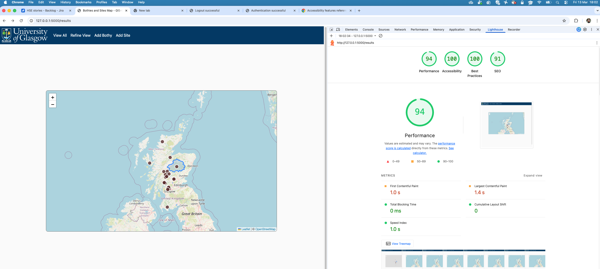

How to guides
MkDocs
Formatting HTML
To format an html page open it, place the cursor at the template start and execute 'option shift F'. This will:
- ensure no lines are too long,
- ensure HTML is properly indented,
- insert a blank line between the open html and open head tag, the close head and open body tag and the close body and the close html tag.
Checking contrast
https://webaim.org/resources/contrastchecker/
To determine what colours are on a page that are not defined in the template file use the Chrome Color Picker extension.
Achieving WCAG level AA accesibility checklist
- HTML tag has lang="en' attribute.
- Language changes are marked with qualified span tag. (Not applicable to this application.)
- Template pages use semantically rich structures: head, body header, nav and main that do NOT include redundent role attributes.
- Links to new pages are implemented with
<a>tags. - Link images have an alt attribute specifying the link target and the
<a>tag does NOT also have an aria-label attribute (which would be redundent). N.B. the Chrome lighthouse report will suggest that you need aria-label but we think that is incorrect. - Link text is adequately descriptive.
- The singular list within the
<nav>section does not have redundent role information within the<ul>and<li>tags. - Individual pages that inherit the base.html page have individual
<title>element values. - The
<head>section has the required<meta name="viewport" content="width=device-width, initial-scale=1.0">specification that does not disable zooming, and also has the recommended<meta charset="UTF-8">specification. - Form fields have
<label>tags. - Colour is not the only visual means of conveying information, indicating an action, prompting a response, or distinguishing a visual element, and the visual presentation of text and images of text has a contrast ratio of at least 4.5:1 (header section blue and white contrast is 11.97:1).
- The visual presentation of User Interface components such as the map have a contrast ratio of at least 3:1 against adjacent colour. The map sea blue is #aad3df and the background is #fafafa giving a contrast ratio of only 1.53:1 but with the addition of a border matching the
<nav>bar colour, the contrast ratio is raised to 7.46:1. The bothy icons are #705148 and areas of moorland are #dee1b2 and areas of forest are #bddab1 giving adequate color ratios of 5.24 and 4.67 respectively. For bothies found within circles or polygons the contrast ratio is > 3. The polygon border has a contrast ratio of 8.09 and 7.3 with areas of moorland and forest respectively. N.B some areas of the background map when compared to each other do NOT meet the acceptance criteria.
Test Accessibility
- Tab through the site (i.e., without using the mouse) to check the order is natural and all items can be accessed.
- Use a screen reader to access the site.
- In Chrome, select View / Developer / Developer Tools. In the right hand pane select the Lighthouse tab, select the default navigation, Desktop, and all four categeories and click the Analyse page load button.
